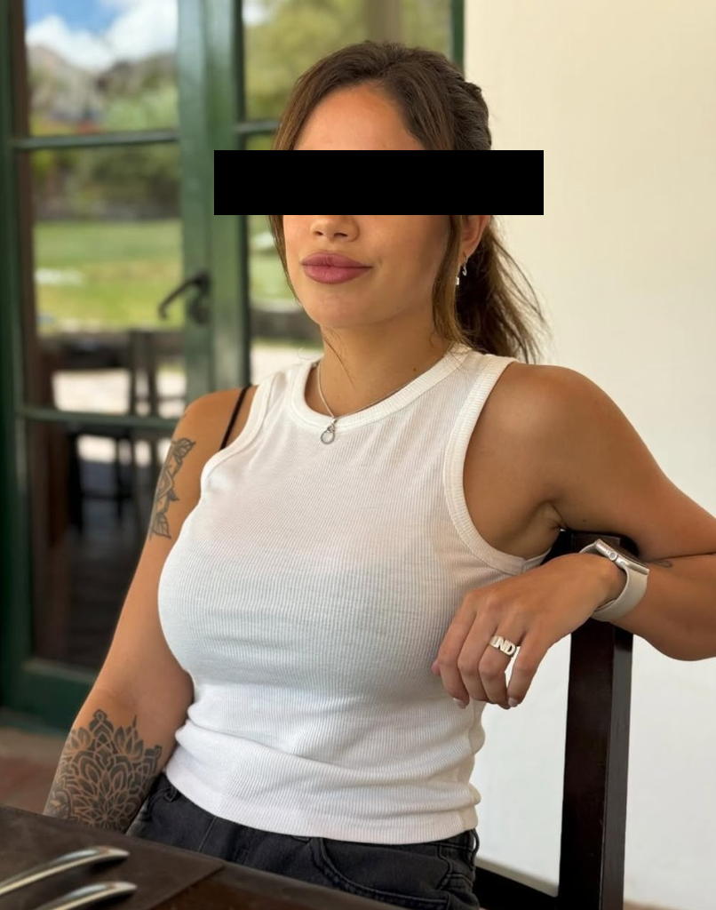
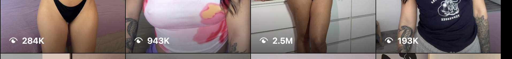
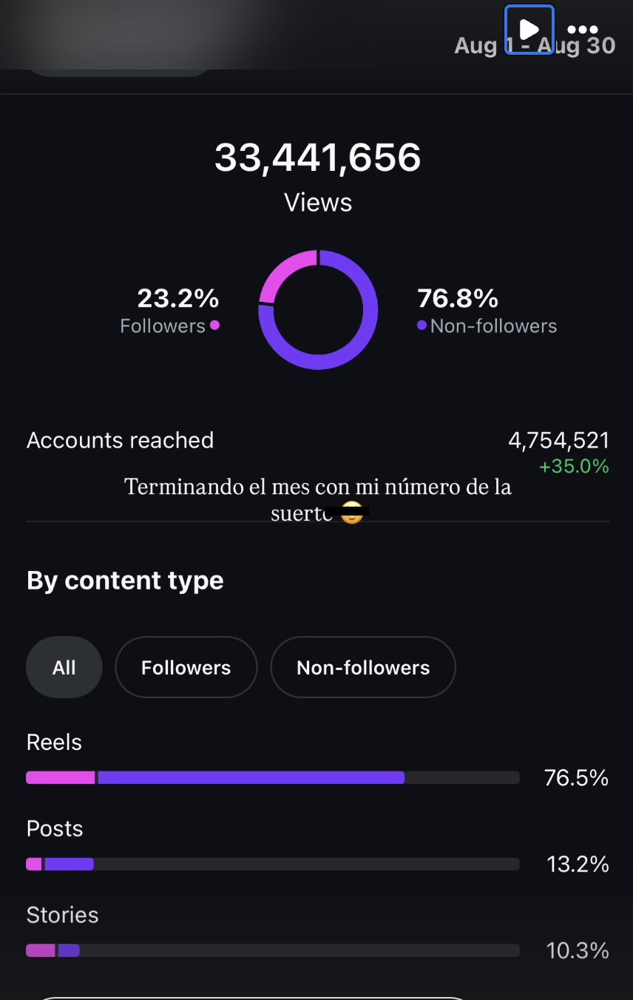
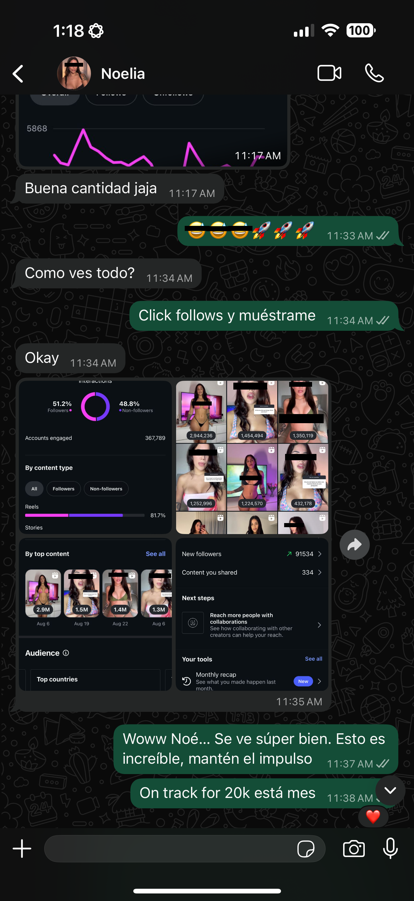
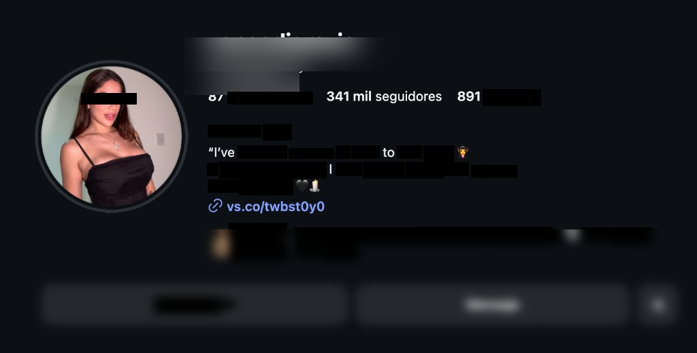
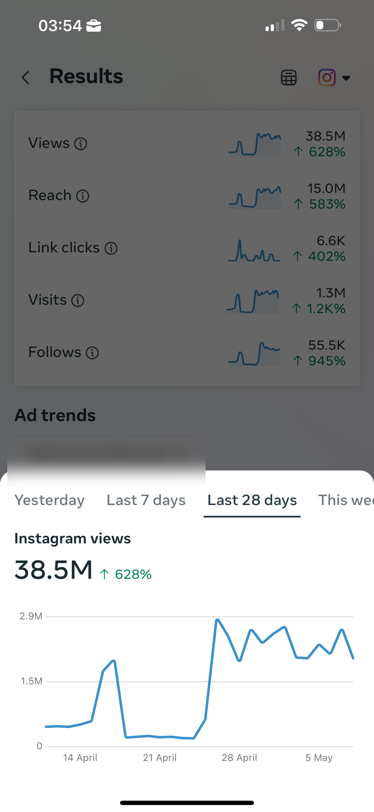
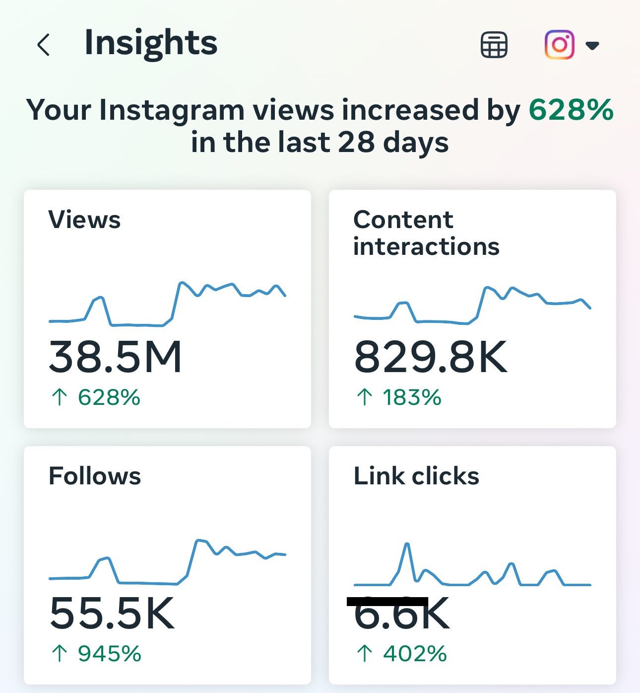
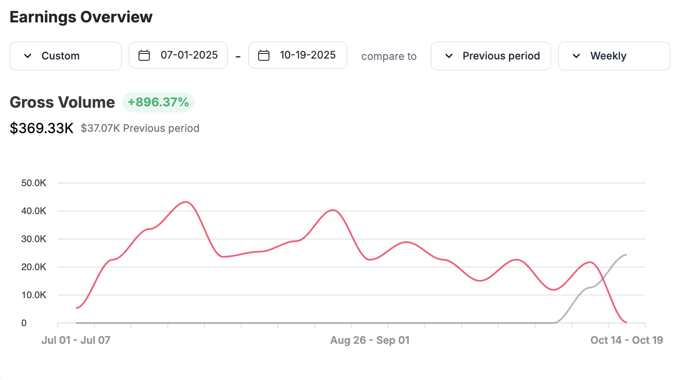
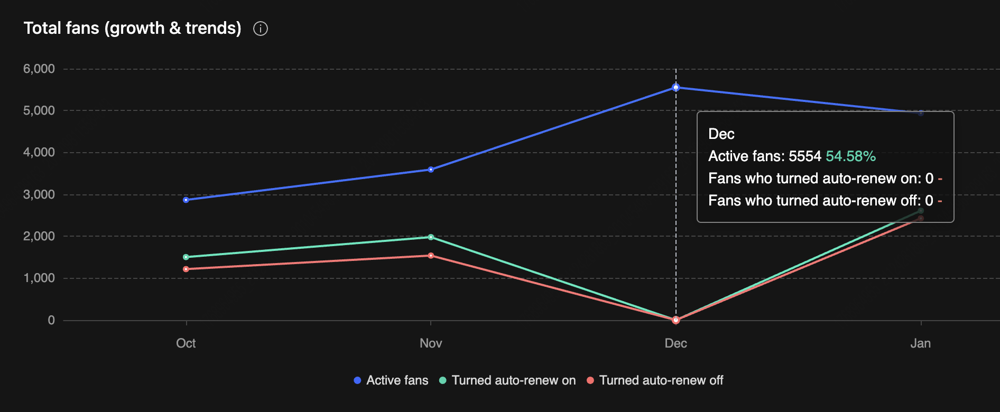

Top earnerTop ingresos
Noelia
$2K/mo to $369K in 16 weeks$2K/mes a $369K en 16 semanas
17K to 341K followers. About $101K a month from July to October 2025.17K a 341K seguidores. Unos $101K al mes de julio a octubre de 2025.

The starting pointEl punto de partida
Noelia had 17K followers and was earning $2K/month when she joined FERAL. Strong brand, massively undermonetized.Noelia tenía 17K seguidores y ganaba $2K al mes cuando se unió a FERAL. Marca fuerte, masivamente sub-monetizada.
What changedQué cambió
We rebuilt content strategy and monetization from scratch. IG views hit 38.5M per month. Followers grew from 17K to 341K. From July to October 2025 she averaged $101K a month.Reconstruimos la estrategia de contenido y monetización desde cero. Las vistas en IG alcanzaron 38.5M por mes. Los seguidores crecieron de 17K a 341K. De julio a octubre de 2025 promedió $101K al mes.



Instagram growth: 17K to 341KCrecimiento en Instagram: 17K a 341K
Grew her Instagram from 17K to 341K followers. 87 posts. 891 following. Pure organic growth.

Fan growth
Active fan count nearly doubled. 55,500 new followers in 28 days.


The result: $369K in 16 weeksEl resultado: $369K en 16 semanas
From July 1 to October 19, 2025, Noelia grossed $369K. That's about $101K a month, and 896% more than the $37K she made in the 16 weeks before.Del 1 de julio al 19 de octubre de 2025, Noelia facturó $369K brutos. Son unos $101K al mes, un 896% más que los $37K que hizo en las 16 semanas anteriores.


Key resultsResultados clave
- $2K a month to about $101K a month
- 17K to 341K Instagram followers (20x growth)
- $369K gross from July 1 to October 19, 2025
- 896% more than the 16 weeks before
- Active fan count nearly doubled in 3 months
Ready for results like these?¿Lista para resultados así?
Every creator we work with gets a dedicated team. Apply today.Cada creadora con la que trabajamos tiene un equipo dedicado. Postula hoy.
APPLYPOSTULAR